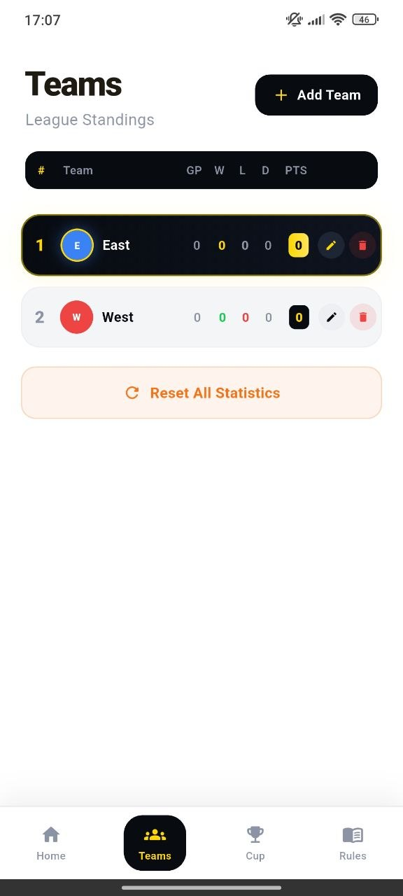
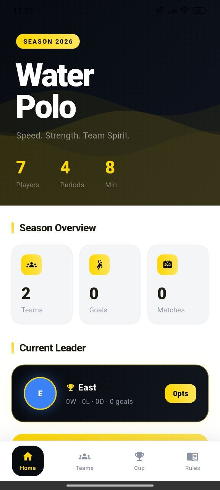
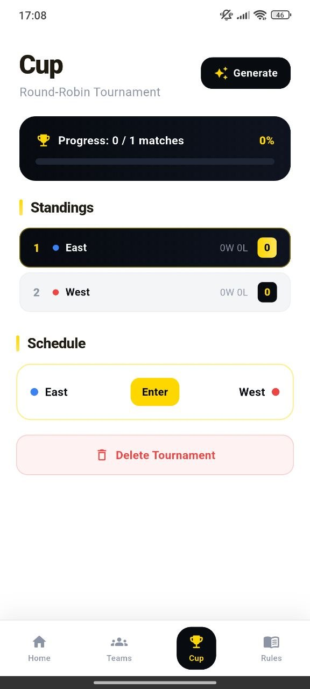
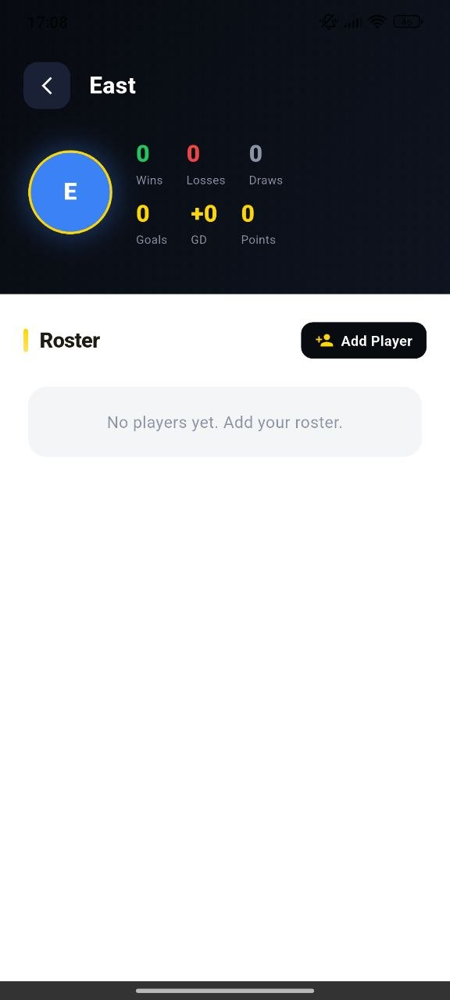
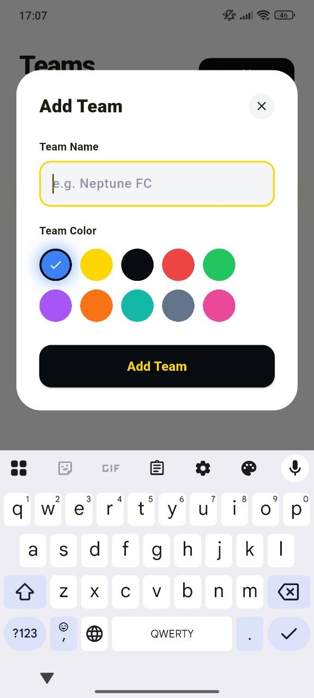
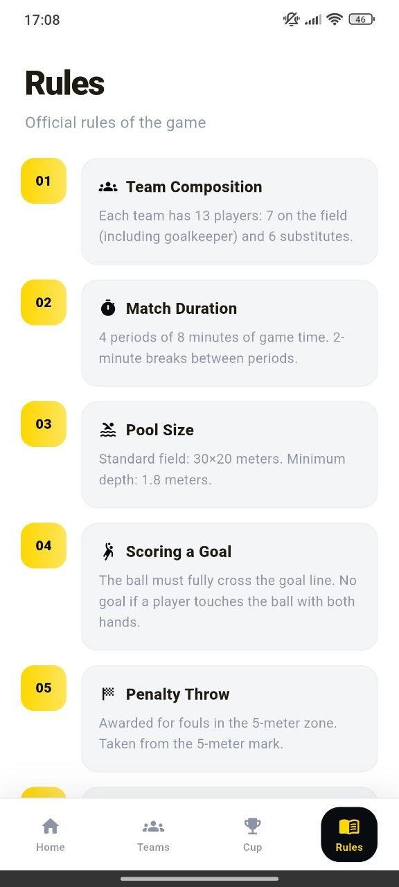

Season overview
Track teams, goals, matches, leaders, players, periods, and match structure.
Planwn365 Match Manager gives water polo organizers a clean season dashboard with teams, standings, cup generation, match results, rosters, local stats, and rule references.



Premium features
Built for fast setup, clean standings, simple tournament handling, and readable rules.
Track teams, goals, matches, leaders, players, periods, and match structure.
Manage GP, wins, losses, draws, points, team colors, and league table ranking.
Create teams with custom colors and a clean modal experience.
Generate round-robin schedule, enter scores, save results, and view progress.
Open team detail pages and add players to team rosters when needed.
Read official game rules about composition, duration, pool size, goals, and penalties.
Manager experience
The app is designed for quick local organization. Add teams, generate a cup schedule, enter match scores, review standings, and keep rules available from the bottom navigation.

Screen showcase
Preview the main experience: home, teams, cup, result entry, and rules.


Why users like it
The interface combines a strong black-and-yellow season identity with practical tools for teams, rosters, cups, match results, and official rules.
Create and edit teams without complicated configuration.
Generate schedule, enter result, and monitor progress from the Cup screen.
No accounts needed, with match and team data stored locally on device.
Workflow
Add team names, choose colors, and build the league table.
Track wins, losses, draws, goals, points, and current leader.
Create a round-robin tournament and open scheduled matchups.
Enter scores, update standings, and continue managing the season.
Highlights
Black panels, yellow accents, soft cards, clear tables, and smooth app-style interactions.
“The cup result screen is simple and fast.”
Team organizer“Standings are easy to read during the season.”
Water polo coach“Rules and teams in one app makes it practical.”
Club userDownload now
Download Planwn365 Match Manager and organize teams, standings, cups, results, rosters, and rules from one premium app.